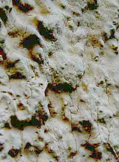

Einführung
Wärmedämm-Farben und der angebliche Lotuseffekt oder gar Nanoeffekt, der auf den leidigen WDV-Systemen und
CO2-bebremsten Betonfassaden die bekannte Schnellverschmutzung inkl. Veralgung und
Verschimmelung verhindern soll, sorgen für Wirbel in der Wärmedämm- und Fassadenbranche und ausreichende Verunsicherung auf Bauherrnseite, vor allem wenn man
schon ein veralgtes Wärmedummverbundsystem an der einst guten Fassade sein eigen nennt.
Das drittmittelgesponsorte Fraunhofer-Institut unterstützte den Vertrieb solcher Wunderfarben durch eine "wissenschaftliche Untersuchung"
("Kurzversuch" sozusagen als Eignungsexpertise, unterzeichnet 21.1.1999, Riedl, Sedlbauer, Künzel).
Aber: Zitat aus dem mir vorliegenden Antrag von Mitgliedern einer Eigentümergemeinschaft gegen den Anstrich mit Lotusan auf einer veralgten Betonfassade (Algenbildung und erhöhte Durchfeuchtung erst nach gem. "Sachverständigen"-Gutachten durchgeführter Hydrophobierung/Kunstharzfarbbeschichtung als krönender Abschluss einer Betonsanierung vor wenigen Jahren):
"Anlass für den Antrag ist u.a. die Beobachtung, dass der Probeanstrich mit Lotusan an Haus 5 schon nach 1 ½ Jahren deutliche Spuren von Algenbildung zeigt. Der Test muss deshalb als gescheitert angesehen werden. ...
Unverständlich: Das negative Testergebnis wird ignoriert und hat offensichtlich auch keinen Einfluss auf das Leistungsverzeichnis/die Ausschreibung des Ing.-Büros [...]. Der Eigentümergemeinschaft wird also zugemutet, für einen Anstrich zu stimmen, der sich bereits im Vorfeld als wenig geeignet erwiesen hat. ..."
Ja, was mag denn der Grund dafür sein, daß ein Ing. zu einem offenbar ungeeigneten Produkt hält? Fallbeispiele.

So oberflächentrocken sieht z.B. ein vor ca. 10 Monaten mit "Lotus"-Farbe gestrichener Münchner Rauhputz 5 Minuten nach einer Wolkenbruchberegnung aus. Kein Tröpfchen steht noch auf der "wasserabweisenden" Kunstharzbeschichtung. In kürzester Zeit hat das Wasser den Weg in das Kapillarrissnetz geschafft.
Bravo, lieber Handwerksmeister F. aus M., das wollte der Bauherr, als er eine "möglichst offene" Farbe für den Putz auf seinem verrotteten Fachwerkhaus bestellte und dafür dann von Dir das teuerste Produkt aufgeschwätzt bekam.
Ob der Wassertransport heraus genauso schnell geht?
Der Malerzeitschrift "Die Mappe" 10/99 entnehmen wir folgende Ausführungen zu den Lotuseffekten (gekürzt ist das Schaulaufen, zu dessen Übersicht ich den Originalartikel sehr empfehle):
"Immer wieder Diskussionsstoff
Selten sorgte ein Beschichtungsstoff für so viel Aufsehen in der Branche wie Lotusan. Ausgerechnet eine Siliconharzfarbe bringt diese Farbengattung wieder ins Gerede, die schon Anfang der neunziger Jahre die Meinungen polarisierte. Wie ist es um die Siliconharzfarben bestellt und wie geht der Maler damit um? Die "Mappe" fragte nach. [...]
Weiter ...Noch Fragen? Hier!
Wunderanstriche Kapitel 1 Wunderanstriche Kapitel 2 Wunderanstriche Kapitel 3 Wunderanstriche Kapitel 4 Wunderanstriche Kapitel 5 Wunderanstriche Kapitel 6 Wunderanstriche Kapitel 7 Wunderanstriche Kapitel 8